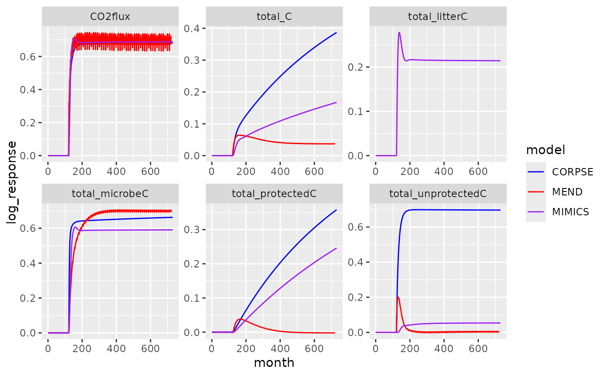

Example data from Sulman et al. (2018)
sulman2018.RdMonthly soil model outputs from a series of simple, idealized experiments looking at the effects of litter addition and removal treatments.
Format
A data frame of 7 columns:
modelModel name
claySoil clay level (all "medium" in these data)
litterLitter quality level (all "highquality" in these data)
experimentName of experiment: "control", "litter_removal", "total_addition_100" (doubling), or "total_addition_30" (30% addition)
monthMonth number of simulation, integer
nameOutput variable: "total_protectedC", "total_unprotectedC", "total_C", "total_microbeC", "total_litterC", or "CO2flux" (all kgC/m2)
valueModel output value
Source
Sulman et al.: Multiple models and experiments underscore large uncertainty in soil carbon dynamics, Biogeochemistry 141:109–123, 2018. https://doi.org/10.1007/s10533-018-0509-z.
Downloaded 31 May 2025 from https://doi.org/10.6084/m9.figshare.6981842.
Note
This dataset is a small extract from the Sulman (2018) data, as it contains results from only three models (CORPSE, MEND, and MIMICS) and four treatments (control, no litter, 30 addition, and 100 high-quality litter scenario.
Examples
# Access the data
sulman2018
#> # A tibble: 48,042 × 7
#> model clay litter experiment month name value
#> <chr> <chr> <chr> <chr> <dbl> <chr> <dbl>
#> 1 CORPSE medium highquality control 0 total_protectedC 5.10
#> 2 CORPSE medium highquality control 0 total_unprotectedC 0.378
#> 3 CORPSE medium highquality control 0 total_C 5.50
#> 4 CORPSE medium highquality control 0 total_microbeC 0.0234
#> 5 CORPSE medium highquality control 0 total_litterC 0
#> 6 CORPSE medium highquality control 0 CO2flux 0.00136
#> 7 CORPSE medium highquality control 1 total_protectedC 5.10
#> 8 CORPSE medium highquality control 1 total_unprotectedC 0.378
#> 9 CORPSE medium highquality control 1 total_C 5.50
#> 10 CORPSE medium highquality control 1 total_microbeC 0.0233
#> # ℹ 48,032 more rows
# Reconstruct figure 3 from Sulman et al. (2018)
# For this, we need to combine control and treatment data...
x <- subset(sulman2018, experiment == "total_addition_100")
x_control <- subset(sulman2018, experiment == "control")
names(x_control)[names(x_control) == "value"] <- "control_value"
x_control$experiment <- NULL
dat <- merge(x, x_control)
# ... and compute the log response ratio
dat$log_response <- log(dat$value) - log(dat$control_value)
library(ggplot2)
ggplot(dat, aes(month, log_response, color = model)) +
geom_line() + facet_wrap(~name, scales = "free") +
scale_color_manual(values = c("CORPSE" = "blue", "MEND" = "red", "MIMICS" = "purple"))
